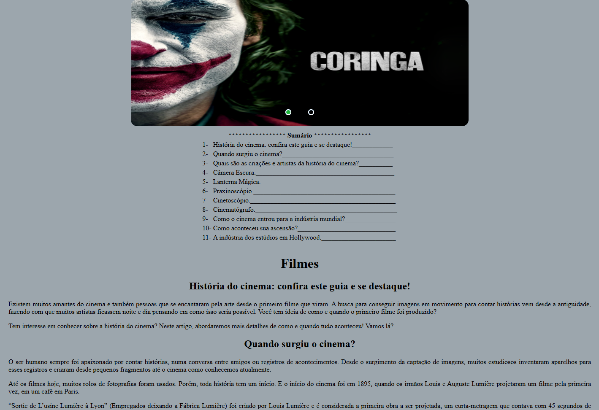
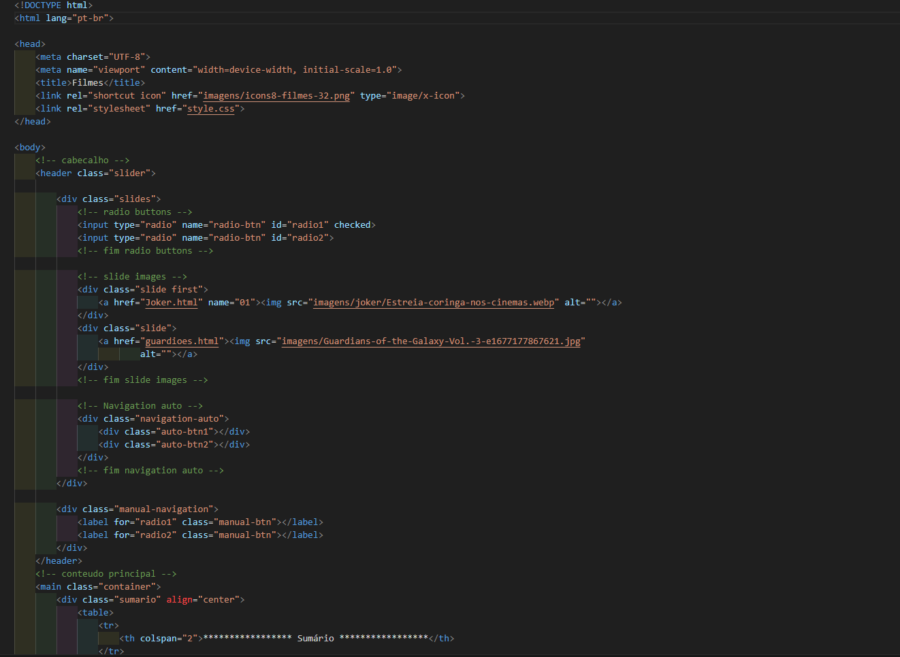
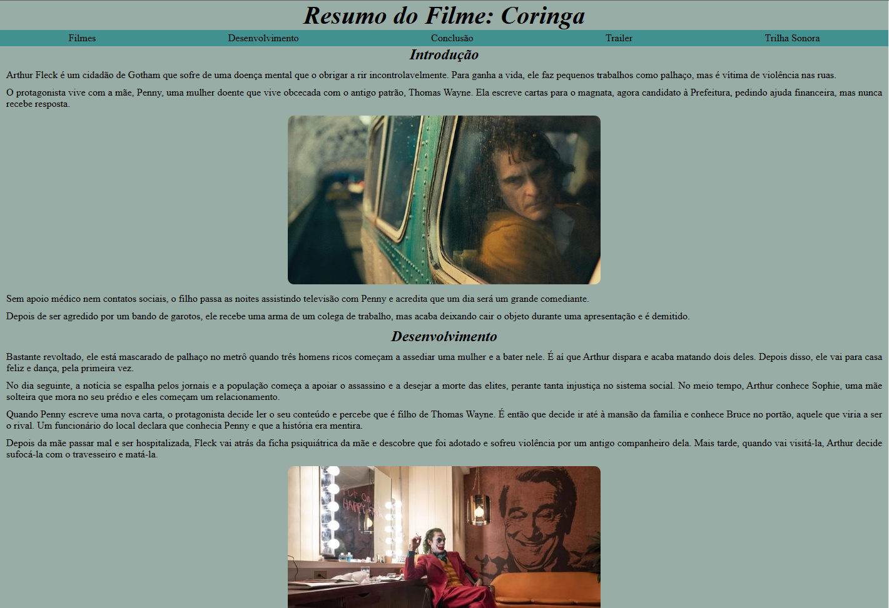
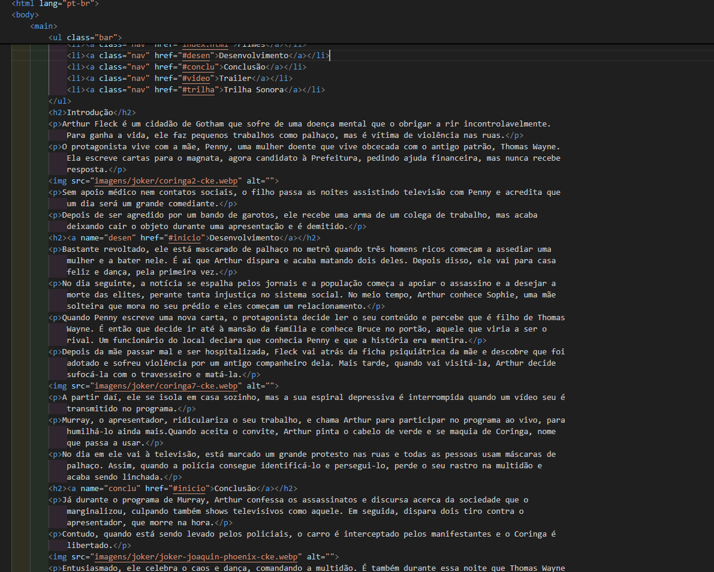
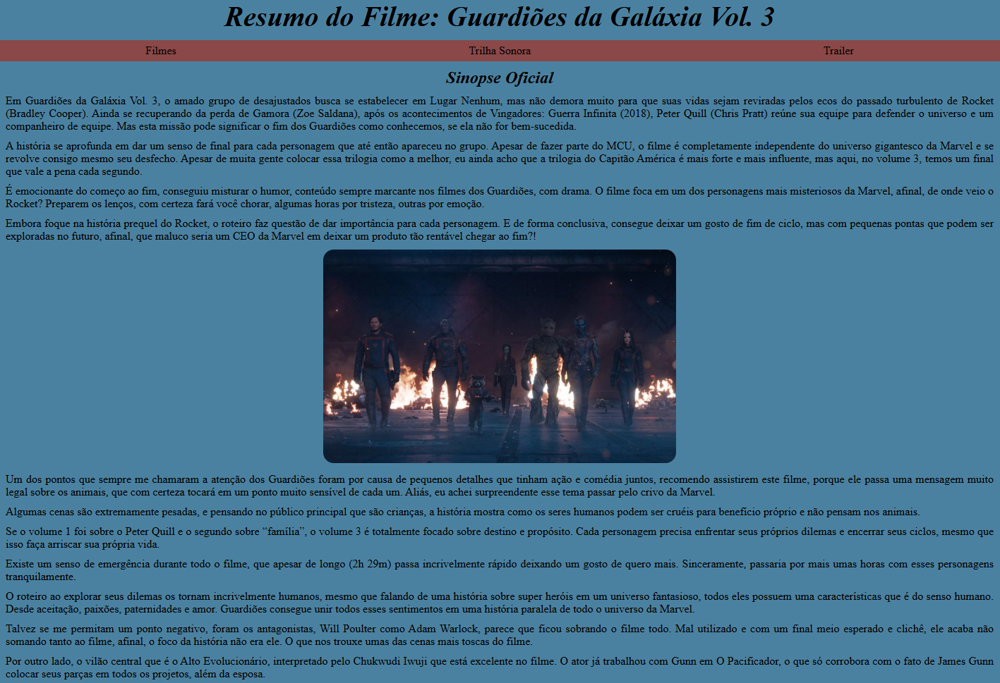
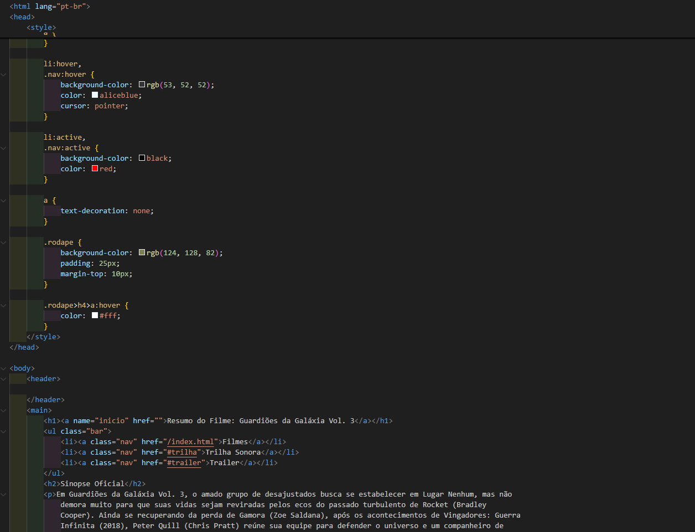
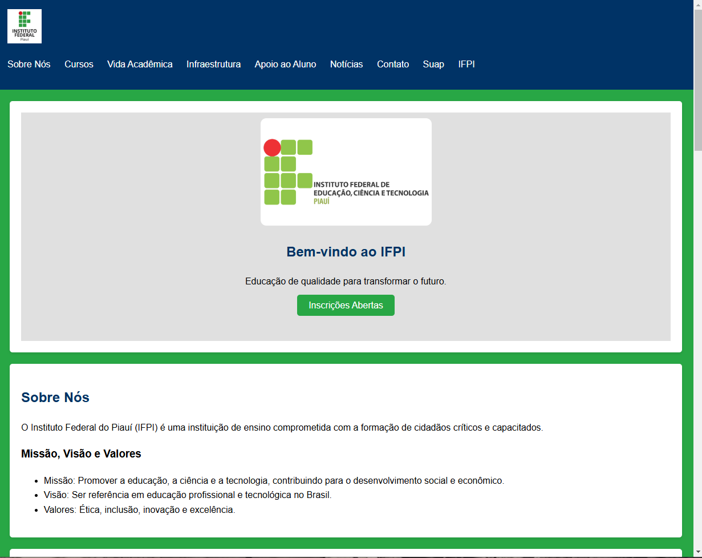
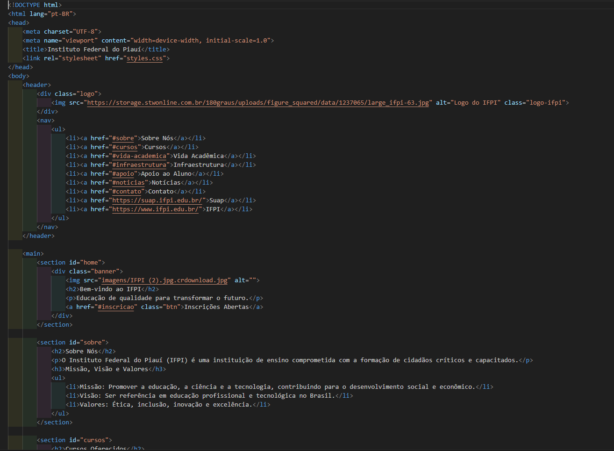

Projetos
Este portfólio exibe nosso trabalho realizado no Instituto Federal
Confira alguns projetos desenvolvidos por nós:

Galeria de Projetos
Este portfólio exibe nosso trabalho realizado no Instituto Federal
Confira alguns projetos desenvolvidos por nós:
Página de Filmes


Página Sobre o Filme Coringa


Página Sobre o Filme Guardiões da Galáxia Vol. 3


Página Site do IFPI

